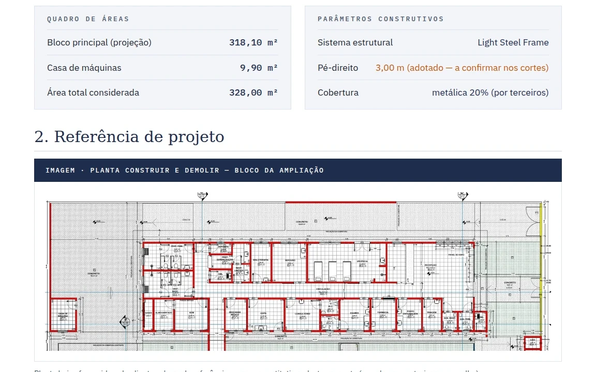
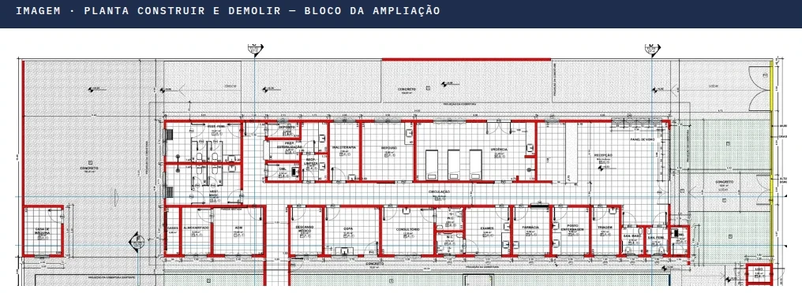
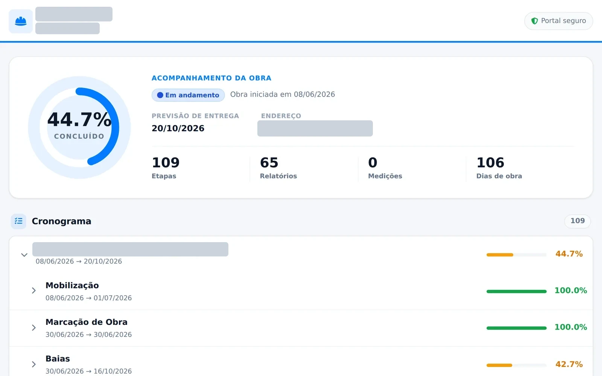
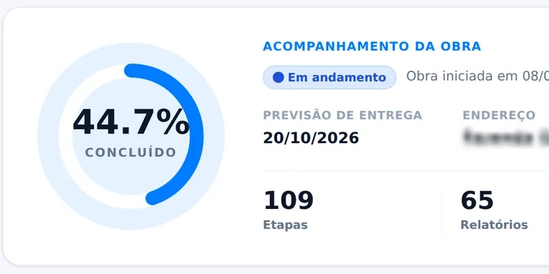
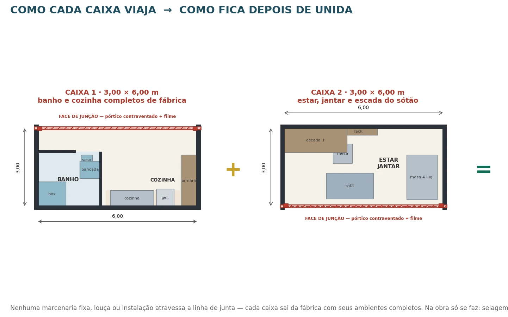
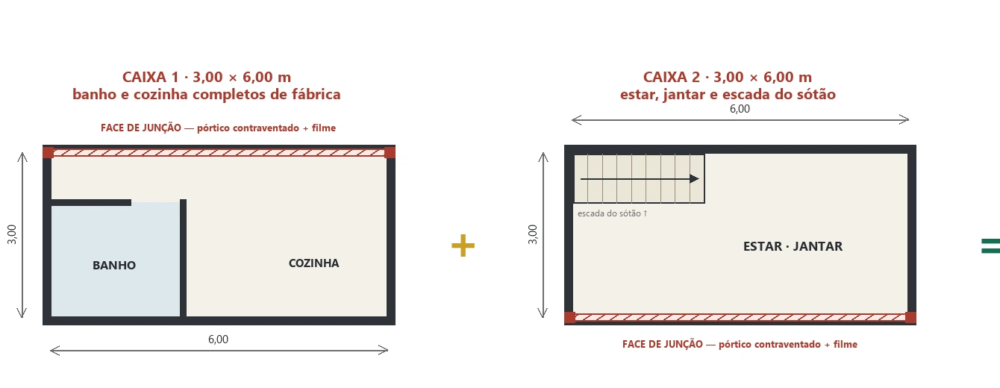

Cássio Viller
Orçamento, planejamento e custos de obra
Orço obras, acompanho a execução e construí os sistemas que uso para isso.
- Engenharia Civil, 7º semestre, Cruzeiro do Sul, após 6 semestres na UNIFEI
- São José dos Campos/SP · CLT ou PJ · presencial ou remoto
WhatsApp (12) 98207-1116cassiovillers@gmail.comCurrículo (PDF)

Sistema de orçamento (VEKS) · mar → set/2026 · da planta do cliente à proposta
Orcei 13 obras, de R$ 29 mil a R$ 24,5 milhões.
11 com proposta. Conferência com a SINAPI: desvio máximo de 0,25% nos 19 serviços conferidos. A gestão de obra deste sistema ainda não rodou numa obra real.
Esta proposta (ampliação de 328 m², 26 ambientes) saiu em 36 minutos, medidos do primeiro arquivo aberto ao PDF. À mão, cerca de 1 dia útil (estimativa).


SIGE na obra dos galpões · jun → set/2026
Implantei a gestão de obra em dois galpões com 22 baias.
Construí o cronograma ligado ao diário de obra (RDO) e ao portal do cliente: 109 etapas, 65 diários e 378 fotos num link (cópia do sistema).


Casas modulares (VEKS) · ago/2026
O celeiro B-36 não cabia no caminhão: dividi em duas caixas.
Três viagens, telhado em kit, 37 decisões registradas. Pré-dimensionado, sujeito à revisão do engenheiro responsável.

Trajetória
- AZ ContabilidadeAnalista contábil no escritório da família: folha, notas, balancete.
- UNIFEI6 semestres de Engenharia Civil; fiscal financeiro do DCE (2022); diretor de vendas da InLoco Jr. (2023 → 2024).
- V Alves ConstruçãoGerente de produção. Em paralelo, estágio na Estruturas do Vale (abr/2025 → mar/2026): orçamentos e propostas; o SIGE nasceu aqui.
- VEKS EngenhariaPJ, 6 meses: orçamentos, compras de obra, contratos, fluxo de caixa, casas modulares e o sistema de orçamento.
No caminho, duas ferramentas: a calculadora de parede em LSF e drywall e o classificador de fluxo de caixa.
O que faço numa construtora
- Levantamento de quantitativos no projeto
- Orçamento com composições SINAPI e BDI
- Cronograma físico-financeiro com curva S
- Diário de obra e medição
- Compras com cotação e quadro de concorrência
- Fluxo de caixa e custo previsto × realizado
WhatsApp (12) 98207-1116cassiovillers@gmail.comCurrículo (PDF)Portfólio completo